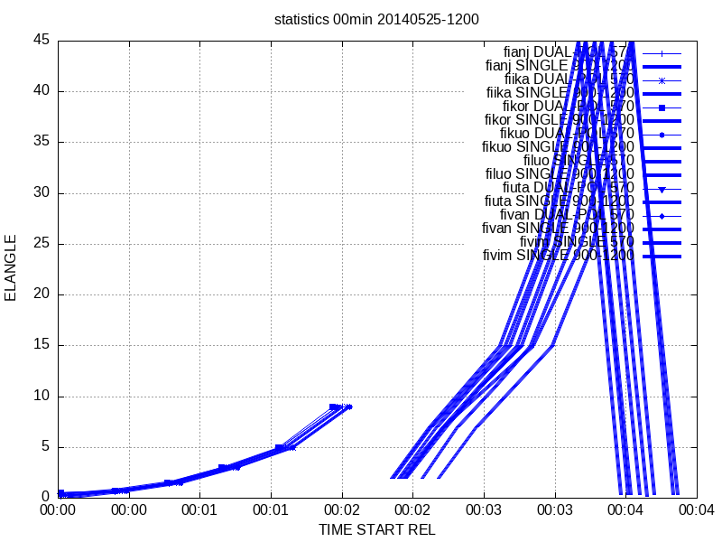

Experimental
Rack comes with a set of Python scripts packed as a module rack.
General design principles and goals
- Simple instruction set: provide a minimal and simple set of parameters.
- User-friendly hands-on usage: the user is not expected to know Rack command-line options, nor the order in which they should be be given.
- Consistency: the scripts in this module share many common options.
Contents
- rack.composer — utility for compositing data.
- rack.statistics — utility for extracting metadata from ODIM-HDF5 files, especially for monitoring incoming data.
Statistics
Usage
Usage of rack.statistics typically consists of two steps:
- Collecting statistics from ODIM-HDF5 files.
- Illustrating the statistics.
In the collection stage, the script invokes rack repeatedly as a subprocess.
Similarly, in the illustration stage, gnuplot is invoked.
Examples
In the following examples, it is assumed that environment variable PYTHONPATH contains the directory under which the modules are located.
Convenience
Instead of defining syntaxes on the command line with:
--outdir_syntax --outfile_syntax --row_syntax
it is often convenient to place them in a shared configuration file, for example nordic-stat1.json :
{
"outdir_syntax": "statistics/{SITE}/{TIME|%M}min",
"outfile_syntax": "{TIME|%Y%m%d-%H%M}_{POL}_{PRF}.txt",
"line_syntax": "{TIME_START|%Y-%m-%dT%H:%M} {TIME_START_REL|%s} {ELANGLE} {TIME_END_REL|%s} # {DATASET}/{DATA} {QUANTITY} {PRFS} {PRF}",
"gnuplot_columns": "TIME_START_REL,ELANGLE"
}
For filtering data in directories, a keyword LABEL may refer to a single radar (for example fikor ).
Then one can issue:
# LABEL=dksam
python3.12 -m rack.statistics \
--config nordic-stat1.json \
radar-baltrad-receiver/zmq-mirror/${LABEL}*2025111704*.h5
python3.12 -m rack.statistics \
--config nordic-stat1.json \
--gnuplot nordic/stat1/${LABEL}.png \
snordic/stat1/${LABEL}*/??min/2025*.txt
# display out/${LABEL}.png
# Daywise file for a sweep (identified by dataset):
python3 -m rack.statistics \
--outdir_syntax './stats1/{SITE}/{MINUTE}min/dataset{DATASET}' \
--outfile_syntax '{MONTH}{DAY}_{POL}_{ELANGLE}_{PRF}_{GEOM}.txt' \
data-acc/201703061200_radar.polar.fiuta.h5
# Files for each volume, separated by polarization modes and pulse repetition modes:
python3 -m rack.statistics \
--outdir_syntax './stats1/{SITE}' \
--outfile_syntax '{TIMESTAMP}_{POL}_{PRF}.txt'
Produces:
It is useful to define the data-row syntax as an environment variable (for example line_syntax ) because both collection and illustration stages rely on the same ordering of data variables.
LINE='{TIME_START|%Y-%m-%dT%H:%M} {TIME_START_REL|%s} {ELANGLE} {TIME_END_REL|%s} # {QUANTITY}'
python3 -m rack.statistics \
--line-syntax "$LINE" \
--outfile_syntax '{TIME|%Y%m%d-%H%M}_{POL}_{PRF}.txt' \
data-kiira/201708121?00_radar.polar.fi???.h5
python3 -m rack.statistics \
--gnuplot-columns TIME_START_REL,ELANGLE \
--LINE "$LINE" \
--gnuplot fin.png \
statistics/fi???/??min/*.txt
gnuplot fin.png

Visualisation of three radars
Python API Example
import rack.statistics
parser = rack.statistics.build_parser()
args = parser.parse_args()
rack.statistics.run(args)
# PYTHONPATH=$PYTHONPATH:/scripts
python3 ./test.py volume.h5
Produces:
[./statistics/fiuta/00min/01][2014-08-27T00:00_00.30_570_500x360x500]:
2014-08-27T00:00 2014-08-27T00:00 00.30
# TH-DBZH-VRAD-WRAD-ZDR-KDP-RHOHV-DBZHC-SQI-PHIDP-HCLASS-ZDRC-TX-DBZX
...
Explanation
| A | B | C | D |
| Default | /dir | Test | (None) |
 1.9.8
1.9.8